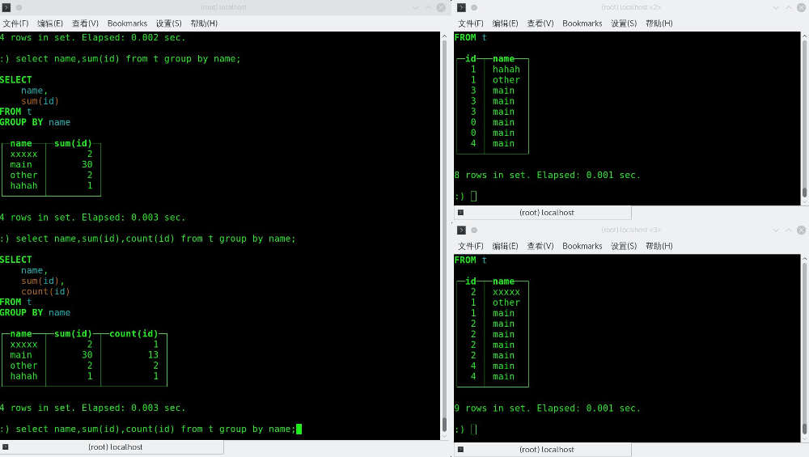

ClickHouse 使用
1. 简介与安装
ClickHouse 是俄罗斯的 Yandex https://www.yandex.com/ （跟 Google 一样做搜索的）开源的一套针对数据仓库场景的多维数据存储与检索工具，它通过针对性的设计力图解决海量多维度数据的查询性能问题。
安装 ClickHouse 在 Ubuntu 下是比较简单的，因为官方直接提供了源， https://clickhouse.yandex/reference_en.html#System%20requirements 直接 apt-get 就可以了。（我没有自己编译安装过）
安装完之后，会自动添加一个名为 clickhouse 的 service ，这个脚本里面的内容除了控制服务的启停，还会调整系统的一些配置。
sudo service clickhouse-server start
也可以手动启动：
clickhouse-server --config-file=/etc/clickhouse-server/config.xml
服务端启动之后，就可以使用官方的客户端工具 clickhouse-client 连接上去看看了，之后的交互，类似 MySQL （连里面的命令都像）。
2. 访问接口
ClickHouse 自己的 clickhouse-client 使用的是“原生”的 TCP 连接来完成与服务端的交互，而在应用中用它的话，它有实现一个 HTTP 的访问接口，把 SQL 语句通过 HTTP 发送到服务端，就可以得到响应数据了（其实不用担心效率问题，数仓场景下，这种传输成本相较于大数据量下的聚合计算挑战，直接就忽略吧）。
默认配置下， HTTP 的服务是在 8123 端口上的，直接访问的话，可以得到一个 ok 的响应。（如果要外部访问，记得把配置中的 listen_host 加一个 0.0.0.0 ）。
HTTP 服务，查询的话， GET 或 POST 都可以，修改和创建，只能用 POST ：
GET "http://172.17.0.2:8123?query=select 2"
echo 'CREATE TABLE t (a UInt8) ENGINE = Memory' | POST 'http://172.17.0.2:8123/' echo 'insert into t (a) values (10)' | POST 'http://172.17.0.2:8123/' GET "http://172.17.0.2:8123?query=select * from t" echo 'drop table t' | POST 'http://172.17.0.2:8123/'
访问地址中，可以通过请求参数，或者头，来指定一些环境配置项，比如 database ，用户名密码什么的。
database，数据库user， 登录用户password， 登录密码- https://clickhouse.yandex/reference_en.html#Settings 其它配置项
另外，对于用户名和密码，也可以通过 X-ClickHouse-User 和 X-ClickHouse-Key 这两个头来设置与传递。
3. 查询语言
ClickHouse 中有两种类型的解析器， full parser 和 data format parser ，前者是一个完整的 SQL 解析器，后者是一个高性能的流解析器。当语句被发到 ClickHouse 时，默认配置下前 1 MB 字节的数据会使用 full parser 来处理，剩下的数据就交给 data format parser 了，所以，像 insert 这类语句，即使整个语句再长，也不会有问题。
语法细节，整体上跟 MySQL 是一样的，当然， ClickHouse 在一些地方有自己特别实现。
比如，对于别名 Synonyms ， ClickHouse 中的限制就少很多：
select ((select 1) as n), n
这种语句，在 ClickHouse 中都是被允许的。
3.1. CREATE TABLE
建表语句除了基本形式外，还有两个扩展形式：
CREATE [TEMPORARY] TABLE [IF NOT EXISTS] [db.]name ( name1 [type1] [DEFAULT | MATERIALIZED | ALIAS expr1], name2 [type2] [DEFAULT | MATERIALIZED | ALIAS expr2], ... ) ENGINE = engine
这是基本形式，如果引擎支持索引的话，索引可以在 ENGINE 的地方额外设置。
CREATE [TEMPORARY] TABLE [IF NOT EXISTS] [db.]name AS [db2.]name2 [ENGINE = engine]
第一种扩展形式，可以创建一个跟指定表完全一样的表，但是可以更换不同的引擎。
CREATE [TEMPORARY] TABLE [IF NOT EXISTS] [db.]name ENGINE = engine AS SELECT ...
这种形式是“建表并填充”，表字段会自动根据 SELECT 的返回内容设置，并且，返回内容会作为新表内容填充进去。
试一下：
create table t (id UInt16, name String) ENGINE = Memory; insert into t(id, name) values (1, 'abc'), (2, 'xxx');
各种引擎后面会专门介绍，这里就用 Memory 来演示了。
create table t2 as t; insert into t2(id, name) values (1, 'abc'), (2, 'xxx');
create table t3 ENGINE = Memory as select * from t;
3.1.1. 默认值
默认值 的处理方面， ClickHouse 中，默认值总是有的，如果没有显示式指定的话，会按字段类型处理：
- 数字类型，
0。 - 字符串，空字符串。
- 数组，空数组。
- 日期，
0000-00-00。 - 时间，
0000-00-00 00:00:00。
NULLs 是不支持的。
同时，在字段类型方面，如果没有明确指定字段类型，但是指定了默认值，则默认值表达式的返回值类型，作为字段类型。如果即指定了字段类型，也指定了默认值表达式，那么对开默认值表达式的结果，相当于会有一个类型转换。
3.1.2. 物化列
指定 MATERIALIZED 表达式，即将一个列作为 物化列 处理了，这意味着这个列的值不能从 insert 语句获取，只能是自己计算出来的。同时， 物化列 也不会出现在 select * 的结果中：
create table t (a MATERIALIZED (b+1), b UInt16) ENGINE = Memory; insert into t(b) values (1); select * from t; select a, b from t;
3.1.3. 表达式列
ALIAS 表达式列某方面跟物化列相同，就是它的值不能从 insert 语句获取。不同的是， 物化列 是会真正保存数据（这样查询时不需要再计算），而 表达式列 不会保存数据（这样查询时总是需要计算），只是在查询时返回表达式的结果。
create table t (a ALIAS (b+1), b UInt16) ENGINE = Memory; insert into t(b) values (1); select * from t; select a, b from t;
3.2. SELECT
这个 ClickHouse 中独特的地方涉及其它的机制，所以 SELECT 放到后面再说。
4. 引擎
引擎就是在创建表时，最后的那个 ENGINE 选项指定的东西，这部分我觉得算是 ClickHouse 最精华的部分了，它很多针对数据仓库场景的设计与优化，是基于特定的引擎实现的，特别是 MergeTree 这一类引擎。
4.1. TinyLog
最简单的一种引擎，每一列保存为一个文件，里面的内容是压缩过的，不支持索引。
这种引擎没有并发控制，所以，当你需要在读，又在写时，读会出错。并发写，内容都会坏掉。
所以，它的应用场景，基本上就是那种只写一次，然后就是只读的场景。同时，它也不适用于处理量大的数据，官方推荐，使用这种引擎的表最多 100 万行的数据。
因为这种引擎的实现非常简单，所以当你有很多很多的小表数据要处理时，使用它是比较合适的，最基本的，它在磁盘上的文件量很少，读一列数据只需要打开一个文件就好了。
在 Yandex.Metrica 产品中，这种引擎用于小批量的中间数据处理上。
create table t (a UInt16, b String) ENGINE = TinyLog; insert into t (a, b) values (1, 'abc');
上面创建一张表 t ，它有 2 个字段，然后插入了一条数据。
之后，我们在保存数据的目录（默认在 /var/lib/clickhouse/data/default/t）可以看到这样的目录结构：
├── a.bin ├── b.bin └── sizes.json
a.bin 和 b.bin 是压缩过的对应的列的数据， sizes.json 中记录了每个 *.bin 文件的大小：
{"yandex":{"a%2Ebin":{"size":"28"},"b%2Ebin":{"size":"30"}}}
4.2. Log
这种引擎跟 TinyLog 基本一致，它的改进点，是加了一个 __marks.mrk 文件，里面记录了每个数据块的偏移，这种做的一个用处，就是可以准确地切分读的范围，从而使用并发读取成为可能。
但是，它是不能支持并发写的，一个写操作会阻塞其它读写操作。
Log 不支持索引，同时因为有一个 __marks.mrk 的冗余数据，所以在写入数据时，一旦出现问题，这个表就废了。
同 TinyLog 差不多，它适用的场景也是那种写一次之后，后面就是只读的场景，临时数据用它保存也可以。
4.3. Memory
内存引擎，数据以未压缩的原始形式直接保存在内存当中，服务器重启数据就会消失。可以并行读，读写互斥锁的时间也非常短。
不支持索引，简单查询下有非常非常高的性能表现。
一般用到它的地方不多，除了用来测试，就是在需要非常高的性能，同时数据量又不太大（上限大概 1 亿行）的场景。
系统运行时也会在 外部数据条件 ， GLOBAL IN 等机制中用到它。
（TODO，数据空间占用与内存占用的大概量）
4.4. Merge
一个工具引擎，本身不保存数据，只用于把指定库中的指定多个表链在一起。这样，读取操作可以并发执行，同时也可以利用原表的索引，但是，此引擎不支持写操作。
指定引擎的同时，需要指定要链接的库及表，库名可以使用一个表达式，表名可以使用正则表达式指定。
create t1 (id UInt16, name String) ENGINE=TinyLog; create t2 (id UInt16, name String) ENGINE=TinyLog; create t3 (id UInt16, name String) ENGINE=TinyLog; insert into t1(id, name) values (1, 'first'); insert into t2(id, name) values (2, 'xxxx'); insert into t3(id, name) values (12, 'i am in t3'); create table t (id UInt16, name String) ENGINE=Merge(currentDatabase(), '^t');
上面先建了 t1 ， t2 ， t3 ，三个表，然后用 Merge 引擎的 t 表再把它们链接起来。
这样，查询的时候，就能同时取到三个表的数据了：
echo 'select _table,* from t order by id desc'|POST 'http://172.17.0.2:8123'
select 中， _table 这个列，是因为使用了 Merge 多出来的一个的一个 虚拟列 ，它表示原始数据的来源表，它不会出现在 show table 的结果当中，同时， select * 不会包含它。
4.5. Distributed
前面说的 Merge 可以看成是单机版的 Distributed ，而真正的 Distributed 具备跨服务器能力，当然，机器地址的配置依赖配置文件中的信息。
与 Merge 类似， Distributed 也是通过一个逻辑表，去访问各个物理表，设置引擎时的样子是：
Distributed(remote_group, database, table [, sharding_key])
其中：
- remote_group 是配置文件（默认在
/etc/clickhouse-server/config.xml）中的remote_servers一节的配置信息。 - database 是各服务器中的库名。
- table 是表名。
- sharding_key 是一个 寻址表达式 ，可以是一个列名，也可以是像
rand()之类的函数调用，它与remote_servers中的weight共同作用，决定在 写 时往哪个 shard 写。
下面的重点，就是配置文件中的 remote_servers 了：
<remote_servers> <log> <shard> <weight>1</weight> <internal_replication>false</internal_replication> <replica> <host>172.17.0.3</host> <port>9000</port> </replica> </shard> <shard> <weight>2</weight> <internal_replication>false</internal_replication> <replica> <host>172.17.0.4</host> <port>9000</port> </replica> </shard> </log> </remote_servers>
log是某个 shard 组的名字，就是上面的 remote_group 的值。shard是固定标签。weight是权重，前面说的 sharding_key 与这个有关。简单来说，上面的配置，理论上来看，第一个 shard “被选中”的概率是1 / 1 + 2，第二个是2 / 1 + 2，这很容易理解。但是， sharding_key 的工作情况，是按实际数字的“命中区间”算的，即第一个的区间是[0, 1)的周期，第二个区间是[1, 1+2)的周期。比如把 sharding_key 设置成id，当id=0或id=3时，一定是写入到第一个 shard 中，如果把 sharding_key 设置成rand()，那系统会对应地自己作一般化转换吧，这种时候就是一种概率场景了。internal_replication是定义针对多个 replica 时的写入行为的。如果为false，则会往所有的 replica 中写入数据，但是并不保证数据写入的一致性，所以这种情况时间一长，各 replica 的数据很可能出现差异。如果为true，则只会往第一个可写的 replica 中写入数据（剩下的事“物理表”自己处理）。replica就是定义各个冗余副本的，选项有host，port，user，password这些。
看一个实际的例子，我们先在 B 和 C 两台机器上创建好“物理表”：
create table t(id UInt16, name String) ENGINE=TinyLog;
然后两台机器可以随便 insert 一些数据进去：
insert into t(id, name) values (0, 'hahaha'); insert into t(id, name) values (2, 'xxxx');
之后，再在 A 机器上，在 config.xml 中配置好 remote_servers 的情况下，再创建“逻辑表”：
create table t(id UInt16, name String) ENGINE=Distributed(log, default, t, id);
然后，针对这个逻辑表，就可以直接随便 insert 一些数据，再看看这些数据具体落在哪个物理表上了：
insert into t(id, name) values (0, 'main'); insert into t(id, name) values (1, 'main'); insert into t(id, name) values (2, 'main');
最后，针对逻辑表的查询，其实是没什么特殊之处了， ClickHouse 自己会分发请求，聚合计算之类的也是在各个物理表上分别进行的：
select name,sum(id),count(id) from t group by name;

注意，逻辑表中的写入操作是异步的，会先缓存在本机的文件系统上，并且，对于物理表的不可访问状态，并没有严格控制，所以写入失败丢数据的情况是可能发生的。
4.6. Null
空引擎，写入的任何数据都会被忽略，读取的结果一定是空。
但是注意，虽然数据本身不会被存储，但是结构上的和数据格式上的约束还是跟普通表一样是存在的，同时，你也可以在这个引擎上创建视图。
4.7. Buffer
Buffer 引擎，像是 Memory 存储的一个上层应用似的（磁盘上也是没有相应目录的）。它的行为是一个缓冲区，写入的数据先被放在缓冲区，达到一个阈值后，这些数据会自动被写到指定的另一个表中。
同时，说它像 Memory 的另一个原因，是它也跟 Memory 一样，有很多的限制，比如没有索引什么的。
Buffer 是接在其它表前面的一层，对它的读操作，也会自动应用到后面表，但是因为前面说到的限制的原因，一般我们读数据，就直接从源表读就好了，缓冲区的这点数据延迟，只要配置得当，影响不大的。
Buffer 后面也可以不接任何表，这样的话，当数据达到阈值，就会被丢弃掉。
使用时，先把源表建好：
create table t (gmt Date, id UInt16, name String, point UInt16) ENGINE=MergeTree(gmt, (id, name), 10);
然后建 Buffer 的表：
create table t_buffer as t ENGINE=Buffer(default, t, 16, 3, 20, 2, 10, 1, 10000)
看起来参数有点多：
Buffer(database, table, num_layers, min_time, max_time, min_rows, max_rows, min_bytes, max_bytes)
database和table不用多说了，就是指源表，这里除了字符串常量，也可以使用变量的。num_layers是类似“分区”的概念，每个分区的后面的min / max是独立计算的，官方推荐的值是16。min / max这组配置荐，就是设置阈值的，分别是 时间（秒），行数，空间（字节）。
阈值的规则，是“所有的 min 条件都满足， 或 至少一个 max 条件满足”。
如果按上面我们的建表来说，所有的 min 条件就是：过了 3秒，2条数据，1 Byte。一个 max 条件是：20秒，或 10 条数据，或有 10K 。
insert into t (gmt, id, name, point) values ('2017-07-10', 1, 'a', 20) insert into t_buffer (gmt, id, name, point) values ('2017-07-10', 1, 'b', 10) select * from t select '------' select * from t_buffer
上面的查询，可以在 t 中查出 1 条数据，从 t_buffer 中查出 2 条数据（它会自己从 t 中取数）。
过了 20 秒后（至少一个 max 条件），就可以从 t 中查出 2 条数据了。
关于 Buffer 的其它一些点：
- 如果一次写入的数据太大或太多，超过了 max 条件，则会直接写入源表。
- 删源表或改源表的时候，建议 Buffer 表删了重建。
- “友好重启”时， Buffer 数据会先落到源表，“暴力重启”， Buffer 表中的数据会丢失。
- 即使使用了 Buffer ，多次的小数据写入，对比一次大数据写入，也 慢得多 （几千行与百万行的差距）。
4.8. Set
Set 这个引擎有点特殊，因为它只用在 IN 操作符右侧，你不能对它 select 。
create table scope(id UInt16, name String) ENGINE=Set;
创建了 scope 表之后，是不能： select * from scope 的，会报错。
insert into scope(id, name) values (1, 'hello');
在 IN 右侧使用 scope 时，要求 列数量，及每列的类型都必须匹配，所以直接地：
select 1 where (1, 'hello') in scope;
也会报错，原因是 1 这个量，这里会自动处理成 UInt8 ，与 scope 的列定义的 UInt16 不匹配。这时，只能手动显式做一个类型转换了：
select 1 where (toUInt16(1), 'hello') in scope;
Set 引擎表，是全内存运行的，但是相关数据会落到磁盘上保存，启动时会加载到内存中。所以，意外中断或暴力重启，是可能产生数据丢失问题的。
4.9. Join
跟 Set 类似，用在 JOIN 的右边，还没搞懂怎么用。
TODO
4.10. MergeTree
这个引擎是 ClickHouse 的重头戏，它支持一个日期和一组主键的两层式索引，还可以实时更新数据。同时，索引的粒度可以自定义，外加直接支持采样功能。
而且，以这个引擎为基础，后面几种引擎都是在其基础之上附加某种特定功能而实现的“变种”。
使用这个引擎的形式如下：
MergeTree(EventDate, (CounterID, EventDate), 8192) MergeTree(EventDate, intHash32(UserID), (CounterID, EventDate, intHash32(UserID)), 8192)
EventDate一个日期的列名。intHash32(UserID)采样表达式。(CounterID, EventDate)主键组（里面除了列名，也支持表达式），也可以是一个表达式。8123主键索引的粒度。
细节稍后再看，先建表看看文件系统那层大概是个什么样：
create table t (gmt Date, id UInt16, name String, point UInt16) ENGINE=MergeTree(gmt, (id, name), 10);
先不管采样机制，创建一个四列的表。然后插入几条数据：
insert into t(gmt, id, name, point) values ('2017-04-01', 1, 'zys', 10); insert into t(gmt, id, name, point) values ('2017-06-01', 4, 'abc', 10); insert into t(gmt, id, name, point) values ('2017-04-03', 5, 'zys', 11);
这里注意一下，日期的格式，好像必须是 yyyy-mm-dd 。
在插入了三条数据之后，在 /var/lib/clickhouse/data/default/t 下可以看到这样的结构：
├── 20170401_20170401_2_2_0 │ ├── checksums.txt │ ├── columns.txt │ ├── gmt.bin │ ├── gmt.mrk │ ├── id.bin │ ├── id.mrk │ ├── name.bin │ ├── name.mrk │ ├── point.bin │ ├── point.mrk │ └── primary.idx ├── 20170403_20170403_6_6_0 │ └── ... ├── 20170601_20170601_4_4_0 │ └── ... └── detached
从上面看的话：
- 最外层的目录，是根据日期列的范围，作了切分的。目前看来，三条数据，并没有使系统执行 merge 操作（还是有三个目录），后面使用更多的数据看看表现。
- 最外层的目录，除了开头像是日期范围，后面的数字，可能与主键有关。
- 最外层还有一个
detached，不知道干什么的。 - 目录内，
primary.idx应该就是主键组索引了。 - 目录内其它的文件，看起来跟 Log 引擎的差不多，就是按列保存，额外的
mrk文件保存一下块偏移量。
简单三条数据，有很多东西还是看不出来的。
（在等了不知道多少时间后，或者手动使用 optimize table t 触发 merge 行为，三个目录会被合成两个目录，变成 20170401_20170403_2_6_1 和 20170601_20170601_4_4_0 了）
4.11. ReplacingMergeTree
这个引擎是在 MergeTree 的基础上，添加了“处理重复数据”的功能，简直就是在多维数据加工流程中，为“最新值”，“实时数据”场景量身打造的一个引擎啊。这些场景下，如果重复数据不处理，你自己当然可以通过时间倒排，取最新的一条数据来达到目的，但是，至少这样会浪费很多的存储空间。
相比 MergeTree ， ReplacingMergeTree 在最后加一个“版本列”，它跟时间列配合一起，用以区分哪条数据是“新的”，并把旧的丢掉（这个过程是在 merge 时处理，不是数据写入时就处理了的，平时重复的数据还是保存着的，并且查也是跟平常一样会查出来的，所以在 SQL 上排序过滤 Limit 什么的该写还是要写的）。同时，主键列组用于区分重复的行。
create table t (gmt Date, id UInt16, name String, point UInt16) ENGINE=ReplacingMergeTree(gmt, (name), 10, point);
像上面一样，“版本列”允许的类型是， UInt 一族的整数，或 Date 或 DateTime 。
insert into t (gmt, id, name, point) values ('2017-07-10', 1, 'a', 20); insert into t (gmt, id, name, point) values ('2017-07-10', 1, 'a', 30); insert into t (gmt, id, name, point) values ('2017-07-11', 1, 'a', 20); insert into t (gmt, id, name, point) values ('2017-07-11', 1, 'a', 30); insert into t (gmt, id, name, point) values ('2017-07-11', 1, 'a', 10);
插入这些数据，用 optimize table t 手动触发一下 merge 行为，然后查询：
select * from t
结果就只有一条：
┌────────gmt─┬─id─┬─name─┬─point─┐ │ 2017-07-11 │ 1 │ a │ 30 │ └────────────┴────┴──────┴───────┘
4.12. SummingMergeTree
ReplacingMergeTree 是替换数据， SummingMergeTree 就是在 merge 阶段把数据加起来了，当然，哪些列要加（一般是针对可加的指标）可以配置，不可加的列，会取一个最先出现的值。
建表：
create table t (gmt Date, name String, a UInt16, b UInt16) ENGINE=SummingMergeTree(gmt, (gmt, name), 8192, (a))
插入数据：
insert into t (gmt, name, a, b) values ('2017-07-10', 'a', 1, 2); insert into t (gmt, name, a, b) values ('2017-07-10', 'b', 2, 1); insert into t (gmt, name, a, b) values ('2017-07-11', 'b', 3, 8); insert into t (gmt, name, a, b) values ('2017-07-11', 'b', 3, 8); insert into t (gmt, name, a, b) values ('2017-07-11', 'a', 3, 1); insert into t (gmt, name, a, b) values ('2017-07-12', 'c', 1, 3);
OPTIMIZE TABLE 后查询的结果为：
┌────────gmt─┬─name─┬─a─┬─b─┐ │ 2017-07-10 │ a │ 1 │ 2 │ │ 2017-07-10 │ b │ 2 │ 1 │ │ 2017-07-11 │ a │ 3 │ 1 │ │ 2017-07-11 │ b │ 6 │ 8 │ │ 2017-07-12 │ c │ 1 │ 3 │ └────────────┴──────┴───┴───┘
11, b 的 a 列，相加了， b 列取了一个 8 。
这个引擎要注意的一个地方是，可加列不能是主键中的列，并且如果某行数据可加列都是 null ，则这行会被删除。
4.13. AggregatingMergeTree
AggregatingMergeTree 是在 MergeTree 基础之上，针对聚合函数结果，作增量计算优化的一个设计，（ clickhouse 中说的是状态，我个人猜，应该就是为增量计算保存的一些中间数据）。它会在 merge 时，针对主键预处理聚合的数据。
在讲具体的用法之前，要先讲明白两个问题，一是聚合数据的预计算，二是进一步，聚合数据的增量计算的情况。
聚合数据的预计算，实现上，算是一种“空间换时间”的权衡，并且是以减少维度为代价的。
假设原始有三个维度，一个需要 count 的指标：
| D1 | D2 | D3 | M1 | |
|---|---|---|---|---|
| 甲 | a | 1 | 1 | |
| 甲 | a | 1 | 1 | |
| 甲 | b | 2 | 1 | |
| 乙 | b | 3 | 1 | |
| 丙 | b | 2 | 1 | |
| 丙 | c | 1 | 1 | |
| 丁 | c | 2 | 1 | |
| 丁 | a | 1 | 1 | |
我们可以通过减少一个维度的方式，来以 count 函数聚合一次 M ，减少维度要达到目的，结果的行数应该要减少的。以上面数据来说，如果我们把 D1 去掉，按 D2 和 D3 聚合的话，结果就是：
| D2 | D3 | count(M1) | |
|---|---|---|---|
| a | 1 | 3 | |
| b | 2 | 2 | |
| b | 3 | 1 | |
| c | 1 | 1 | |
| c | 2 | 1 | |
count(M1) 的值有多少大于 1 的，就可以反映这一步聚合有多少效果，因为它减少了数据的行数了。
通过这一步，我们从原来的三个维度，减少到两个维度，数据从 8 行减少到 5 行。当然，剩下的两个维度，在实际使用中，还是可以自由控制的了。
在实际中，如果是记录网站访问之类的数据，原始数据中一般都有一个“用户ID”的维度，但是在输出数据时，是不会精确到人的，那么这就是一个可以去掉的维度，至于去掉这个维度之后，数据行数能减少多少，实际上跟减少的那个维度的数据是完全没有关系的，只跟剩下的维度有关，剩下的维度值越集中，数据行数就越少。不过，去掉“用户ID”之后，好像我们就没有办法计算像 UV 这样的数据了。
接着说去掉一个维度后的情况，前面说当去掉“用户ID”之后，剩下的数据其实我们是没有办法再计算 UV 这样的指标了的，那么在之前，我们可以就把相关的指标算好。比如我们在前面的数据上加一个 UV 指标：
| D2 | D3 | count(M1) | UV by D2 and D3 | |
|---|---|---|---|---|
| a | 1 | 3 | 2 | |
| b | 2 | 2 | 2 | |
| b | 3 | 1 | 1 | |
| c | 1 | 1 | 1 | |
| c | 2 | 1 | 1 | |
现在又有新的问题了，现在虽然还剩下 2 个维度，但是像 UV 这类数据即不可加，也不是复合指标，对于这个指标而言，维度不能再改变了。（从上方的数据中，你无法再按 D2 这一个维度聚合 UV，因为 D1 已经没了），如果只看 D2 这一个维度的 UV 值，那么我们想要的结果是：
| D2 | UV by D2 | |
|---|---|---|
| a | 2 | |
| b | 3 | |
| c | 2 | |
AggregatingMergeTree 也许能解决这个问题。
clickhouse 中，对于聚合函数的实现，实现上是有三套的，除了普通的 sum, uniq 这些，应用于 AggregatingMergeTree 上的，还有 sumState , uniqState ，及 sumMerge ， uniqMerge 这两组，而一个 AggregatingMergeTree 的表，里面的聚合函数，只能使用 sumState 这一组，对应于，查询时，只能使用 sumMerge 这一组。（ sumState 这一组的输出，是无法查看的二进制数据）
另外，对于 AggregatingMergeTree 引擎的表，不能使用普通的 INSERT 去添加数据，那怎么办？一方面可以用 INSERT SELECT 来插入数据，更常用的，是可以创建一个物化视图。
我们还是按上面的例子，先创建一个 t 表：
create table t(gmt Date, D1 String, D2 String, D3 String, M1 UInt16) ENGINE=MergeTree(gmt, (gmt, D1, D2, D3), 8192)
原始数据放进去：
insert into t (gmt, D1, D2, D3, M1) values ('2017-07-10', '甲', 'a', '1', 1); insert into t (gmt, D1, D2, D3, M1) values ('2017-07-10', '甲', 'a', '1', 1); insert into t (gmt, D1, D2, D3, M1) values ('2017-07-10', '甲', 'b', '2', 1); insert into t (gmt, D1, D2, D3, M1) values ('2017-07-10', '乙', 'b', '3', 1); insert into t (gmt, D1, D2, D3, M1) values ('2017-07-10', '丙', 'b', '2', 1); insert into t (gmt, D1, D2, D3, M1) values ('2017-07-10', '丙', 'c', '1', 1); insert into t (gmt, D1, D2, D3, M1) values ('2017-07-10', '丁', 'c', '2', 1); insert into t (gmt, D1, D2, D3, M1) values ('2017-07-10', '丁', 'a', '1', 1);
按 D2 和 D3 聚合 count(M1) 就是：
select D2, D3, count(M1) from t group by D2, D3;
只按 D2 聚合 UV 是：
select D2, uniq(D1) from t group by D2;
这些都没有什么特殊的地方。
接下来，我们创建一个物化视图，使用 AggregatingMergeTree ，把 D1 去掉（把前面的 t 删了重建，在创建视图后，重新填充数据，因为视图数据要重置）：
create materialized view t_view ENGINE = AggregatingMergeTree(gmt, (D2, D3), 8192) as select D2, D3, uniqState(D1) as uv from t group by D2, D3;
在重新填充数据后，直接查 t_view 的话：
select * from t_view
可以看到这样的输出：
┌────────gmt─┬─D2─┬─D3─┬─uv──────┐ │ 2017-07-10 │ c │ 2 │ \0???? │ └────────────┴────┴────┴─────────┘ ┌────────gmt─┬─D2─┬─D3─┬─uv─────────┐ │ 2017-07-10 │ a │ 1 │ \0??? │ │ 2017-07-10 │ b │ 2 │ \0??????? │ │ 2017-07-10 │ b │ 3 │ \0???? │ └────────────┴────┴────┴────────────┘ ┌────────gmt─┬─D2─┬─D3─┬─uv──────┐ │ 2017-07-10 │ a │ 1 │ \0???? │ └────────────┴────┴────┴─────────┘ ┌────────gmt─┬─D2─┬─D3─┬─uv──────┐ │ 2017-07-10 │ c │ 1 │ \????? │ └────────────┴────┴────┴─────────┘
OPTIMIZE TABLE t_view 一下，就只有一片了。
┌────────gmt─┬─D2─┬─D3─┬─uv─────────┐ │ 2017-07-10 │ a │ 1 │ \0??????? │ │ 2017-07-10 │ b │ 2 │ \0??????? │ │ 2017-07-10 │ b │ 3 │ \0??????? │ │ 2017-07-10 │ c │ 1 │ \0??????? │ │ 2017-07-10 │ c │ 2 │ \0??????? │ └────────────┴────┴────┴────────────┘
我们要查 D2 的 uv ，可以这样：
select D2, uniqMerge(uv) from t_view group by D2 order by D2;
输出：
┌─D2─┬─uniqMerge(uv)─┐ │ a │ 2 │ │ b │ 3 │ │ c │ 2 │ └────┴───────────────┘
酷吧。 t_view 中的 uv 列保存的是源表中 D1 列的聚合状态，对于 uniq 的实现，简单地，状态中可以记录已经找到的 row_id ，已经有的参数值的集合，这里参数是 D1，还有当前结果值，这样，下次查的时候，就可以从 row_id 开始去扫源表，并把结果拿到集合验证，并决定是否更新结果。效率上比全表再扫一次高得多了。
说得更细一点，原始数据：
| row_id | D1 | D2 | D3 | M1 | |
|---|---|---|---|---|---|
| 0 | 甲 | a | 1 | 1 | |
| 1 | 甲 | a | 1 | 1 | |
| 2 | 甲 | b | 2 | 1 | |
| 3 | 乙 | b | 3 | 1 | |
| 4 | 丙 | b | 2 | 1 | |
| 5 | 丙 | c | 1 | 1 | |
| 6 | 丁 | c | 2 | 1 | |
| 7 | 丁 | a | 1 | 1 | |
t_view 的数据大概会像这个样子：
| gmt | D2 | D3 | uv | |
|---|---|---|---|---|
| 2017-07-10 | a | 1 | row_id:7 value:2 set:{甲,丁} | |
| 2017-07-10 | b | 2 | row_id:7 value:2 set:{甲,丙} | |
| 2017-07-10 | b | 3 | row_id:7 value:1 set:{乙} | |
| 2017-07-10 | c | 1 | row_id:7 value:1 set:{丙} | |
| 2017-07-10 | c | 2 | row_id:7 value:1 set:{丁} | |
这样，源表中后面有新的数据进去，更新 t_view 的效率是很高的了。
再考虑从 t_view 中只取子维度的情况，比如前面的只取 D2 维度的结果，对于 uniq 来说就更简单了， D2 的值对应的 uv 状态中，集合做并集就可以得到正确结果了。比如取 b 的 uniq ，就是 {甲,丙} 并 {乙} 结果为 3 。
可以看出，这种方式，对于不同的聚合函数处理上是会有不同，但是即使是对 uv 这类算是最麻烦的聚合计算， uniqState 也处理得很好。
4.14. CollapsingMergeTree
这个引擎，是专门为 OLAP 场景下，一种“变通”存数做法而设计的，要搞明白它，以及什么场景下用它，为什么用它，需要先行了解一些背景。
首先，在 clickhouse 中，数据是不能改，更不能删的，其实在好多数仓的基础设施中都是这样。前面为了数据的“删除”，还专门有一个 ReplacingMergeTree 引擎嘛。在这个条件之下，想要处理“终态”类的数据，比如大部分的状态数据都是这类，就有些麻烦了。
试想，假设每隔 10 秒时间，你都能获取到一个当前在线人数的数据，把这些数据一条一条存下，大概就是这样：
| 时间点 | 在线人数 | |
|---|---|---|
| 10 | 123 | |
| 20 | 101 | |
| 30 | 98 | |
| 40 | 88 | |
| 50 | 180 | |
现在问你，“当前有多少人在线？”，这么简单的问题，怎么回答？
在这种存数机制下，“当前在线人数”显然是不能把 在线人数 这一列聚合起来取数的嘛。也许，能想到的是，“取最大的时间”的那一行，即先 order by 再 limit 1 ，这个办法，在这种简单场景下，好像可行。那我们再把维度加一点：
| 时间点 | 频道 | 在线人数 | |
|---|---|---|---|
| 10 | a | 123 | |
| 10 | b | 29 | |
| 10 | c | 290 | |
| 20 | a | 101 | |
| 20 | b | 181 | |
| 20 | c | 31 | |
| 30 | a | 98 | |
| 30 | b | 18 | |
| 30 | c | 56 | |
| 40 | a | 88 | |
| 40 | b | 9 | |
| 40 | c | 145 | |
这时，如果想看每个频道的当前在线人数，查询就不像之前那么好写了，硬上的话，你可能需要套子查询。好了，我们目的不是讨论 SQL 语句怎么写。
回到开始的数据：
| 时间点 | 在线人数 | |
|---|---|---|
| 10 | 123 | |
| 20 | 101 | |
| 30 | 98 | |
| 40 | 88 | |
| 50 | 180 | |
如果我们的数据，是在关心一个最终的状态，或者说最新的状态的话，考虑在业务型数据库中的作法，我们会不断地更新确定的一条数据， OLAP 环境我们不能改数据，但是，我们可以通过“运算”的方式，去抹掉旧数据的影响，把旧数据“减”去即可，比如：
| 符号 | 时间点 | 在线人数 | |
|---|---|---|---|
| + | 10 | 123 | |
| - | 10 | 123 | |
| + | 20 | 101 | |
当我们在添加 20 时间点的数据前，首先把之前一条数据“减”去，以这种“以加代删”的增量方式，达到保存最新状态的目的。
当然，起初的数据存储，我们可以以 +1 和 -1 表示符号，以前面两个维度的数据的情况来看（我们把 “时间，频道” 作为主键）：
| sign | gmt | name | point | |
|---|---|---|---|---|
| +1 | 10 | a | 123 | |
| +1 | 10 | b | 29 | |
| +1 | 10 | c | 290 | |
| -1 | 10 | a | 123 | |
| +1 | 20 | a | 101 | |
| -1 | 10 | b | 29 | |
| +1 | 20 | b | 181 | |
| -1 | 10 | c | 290 | |
| +1 | 20 | c | 31 | |
如果想看每个频道的当前在线人数：
select name, sum(point * sign) from t group by name;
就可以得到正确结果了：
┌─name─┬─sum(multiply(point, sign))─┐ │ b │ 181 │ │ c │ 31 │ │ a │ 101 │ └──────┴────────────────────────────┘
神奇。考虑数据可能有错误的情况（-1 和 +1 不匹配），我们可以添加一个 having 来把错误的数据过滤掉，比如再多一条类似这样的数据：
insert into t (sign, gmt, name, point) values (-1, '2017-07-11', 'd', 10),
再按原来的 SQL 查，结果是：
┌─name─┬─sum(multiply(point, sign))─┐ │ b │ 181 │ │ c │ 31 │ │ d │ -10 │ │ a │ 101 │ └──────┴────────────────────────────┘
加一个 having ：
select name, sum(point * sign) from t group by name having sum(sign) > 0;
就可以得到正确的数据了：
┌─name─┬─sum(multiply(point, sign))─┐ │ b │ 181 │ │ c │ 31 │ │ a │ 101 │ └──────┴────────────────────────────┘
这种增量方式更大的好处，是它与指标本身的性质无关的，不管是否是可加指标，或者是像 UV 这种的去重指标，都可以处理。
相较于其它一些变通的处理方式，比如对于可加指标，我们可以通过“差值”存储，来使最后的 sum 聚合正确工作，但是对于不可加指标就无能为力了。
上面的东西如果都明白了，我们也就很容易理解 CollapsingMergeTree 引擎的作用了。
“以加代删”的增量存储方式，带来了聚合计算方便的好处，代价却是存储空间的翻倍，并且，对于只关心最新状态的场景，中间数据都是无用的。 CollapsingMergeTree 引擎的作用，就是针对主键，来帮你维护这些数据，它会在 merge 期，把中间数据删除掉。
前面的数据，如果我们存在 MergeTree 引擎的表中，那么通过 select * from t 查出来是：
┌─sign─┬────────gmt─┬─name─┬─point─┐ │ 1 │ 2017-07-10 │ a │ 123 │ │ -1 │ 2017-07-10 │ a │ 123 │ │ 1 │ 2017-07-10 │ b │ 29 │ │ -1 │ 2017-07-10 │ b │ 29 │ │ 1 │ 2017-07-10 │ c │ 290 │ │ -1 │ 2017-07-10 │ c │ 290 │ │ 1 │ 2017-07-11 │ a │ 101 │ │ 1 │ 2017-07-11 │ b │ 181 │ │ 1 │ 2017-07-11 │ c │ 31 │ │ -1 │ 2017-07-11 │ d │ 10 │ └──────┴────────────┴──────┴───────┘
如果换作 CollapsingMergeTree ，那么直接就是：
┌─sign─┬────────gmt─┬─name─┬─point─┐ │ 1 │ 2017-07-11 │ a │ 101 │ │ 1 │ 2017-07-11 │ b │ 181 │ │ 1 │ 2017-07-11 │ c │ 31 │ │ -1 │ 2017-07-11 │ d │ 10 │ └──────┴────────────┴──────┴───────┘
CollapsingMergeTree 在创建时与 MergeTree 基本一样，除了最后多了一个参数，需要指定 Sign 位（必须是 Int8 类型）：
create table t(sign Int8, gmt Date, name String, point UInt16) ENGINE=CollapsingMergeTree(gmt, (gmt, name), 8192, sign);
讲明白了 CollapsingMergeTree 可能有人会问，如果只是要“最新状态”，用 ReplacingMergeTree 不就好了么？
这里，即使不论对“日期维度”的特殊处理（ ReplacingMergeTree 不会对日期维度做特殊处理，但是 CollapsingMergeTree 看起来是最会保留最新的），更重要的，是要搞明白， 我们面对的数据的形态，不一定是 merge 操作后的“完美”形态，也可能是没有 merge 的中间形态，所以，即使你知道最后的结果对于每个主键只有一条数据，那也只是 merge 操作后的结果，你查数据时，聚合函数还是得用的，当你查询那一刻，可能还有很多数据没有做 merge 呢。
明白了一点，不难了解，对于 ReplacingMergeTree 来说，在这个场景下跟 MergeTree 其实没有太多区别的，如果不要 sign ，那么结果就是日期维度在那里，你仍然不能以通用方式聚合到最新状态数据。如果要 sign ，当它是主键的一部分时，结果就跟 MergeTree 一样了，多存很多数据。而当它不是主键的一部分，那旧的 sign 会丢失，就跟没有 sign 的 MergeTree 一样，不能以通用方式聚合到最新状态数据。结论就是， ReplacingMergeTree 的应用场景本来就跟 CollapsingMergeTree 是两回事。
ReplacingMergeTree 的应用，大概都是一些 order by limit 1 这种。而 CollapsingMergeTree 则真的是 group by 了。
5. TODO